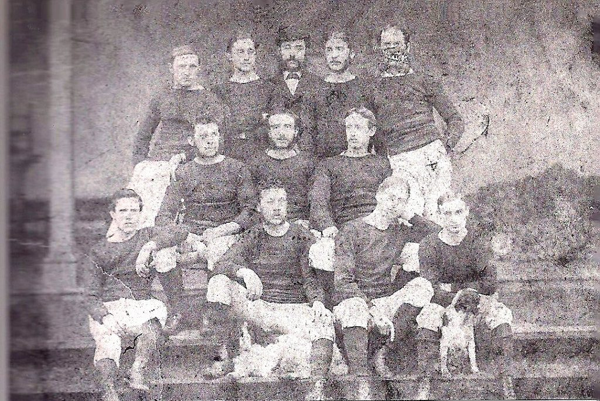

Sejarah

Klub ini didirikan pada bulan Oktober 1864 oleh anggota Wrexham Cricket Club yang ingin memiliki kegiatan olahraga selama musim dingin. Ini menjadikan mereka tim sepak bola asosiasi terlama kelima, klub profesional terlama ketiga, dan yang tertua di Wales. Pertandingan pertama mereka dimainkan pada tanggal 22 Oktober 1864 di Denbighshire County Cricket Ground (The Racecourse) melawan Prince of Wales Fire Brigade.
Karena peraturan sepak bola masih sedikit fleksibel pada saat itu, pertandingan awal melibatkan tim dengan hingga 17 pemain di setiap sisi (16 pemain saat bermain melawan Provincial Insurance Office dan Chester College, 15 pemain saat melawan Volunteer Fire Brigade). Selama tahun-tahun awal ini, Wrexham menjadi pemimpin dalam kampanye untuk membatasi tim agar hanya memiliki 11 pemain di lapangan pada satu waktu.
Stadion

Sejak 1864 Wrexham bertanding kandang di The Racecourse Ground, terletak di Jalan Mold. Pada Agustus 2011 Universitas Glyndŵr membeli stadion dan fasilitas pelatihan klub di Gresford, menambahkan nama mereka ke stadion tersebut untuk menjadi Glyndŵr University Racecourse Stadium. Selanjutnya, pada tahun 2016, Wrexham Supporters Trust memperoleh hak sewa selama 99 tahun di lapangan tersebut, dan namanya dikembalikan ke The Racecourse Ground. Kapasitasnya 10.500, menjadikannya salah satu stadion terbesar di Liga Nasional.
Prestasi
Prestasi Wrexham AFC telah mencakup berbagai pencapaian selama sejarah panjang klub ini. Di bawah ini adalah beberapa prestasi terkemuka yang telah diraih oleh Wrexham AFC.

Final Piala FA 2013 yang dimainkan antara Wrexham dan Grimsby Town berakhir dengan Wrexham menang 4-1 dalam adu penalti setelah kedua tim bermain imbang dalam waktu normal 90 menit. Grimsby Town memimpin atas Wrexham dengan satu gol yang dicetak oleh Andy Cook pada menit ke-71, tetapi Wrexham menyamakan kedudukan ketika kapten Keates dilanggar di dalam kotak dan Kevin Thornton mencetak tendangan penalti yang dihasilkan. Pada perpanjangan waktu berikutnya kedua tim gagal mencetak gol sehingga berujung pada adu penalti. Tendangan penalti dari Adrian Cieslewicz, Danny Wright, Chris Westwood dan terakhir Johnny Hunt, membawa kemenangan Wrexham. Wrexham menjadi klub Welsh pertama yang memenangkan trofi tersebut.

Wrexham mengoleksi 110 poin dari 45 pertandingan. Dengan sisa satu pertandingan lagi, Notts County yang bertengger di peringkat kedua dengan raihan 106 poin tidak bisa lagi mengejar poin Wrexham. Alhasil Wrexham dinyatakan jadi kampiun Vanarama National League dan promosi ke League Two di musim depan. Sebagai informasi, slot promosi otomatis dari National League ke League Two hanya satu, jadi hanya juara Vanarama National League saja yang bisa promosi ke kasta keempat sepak bola Inggris secara otomatis.